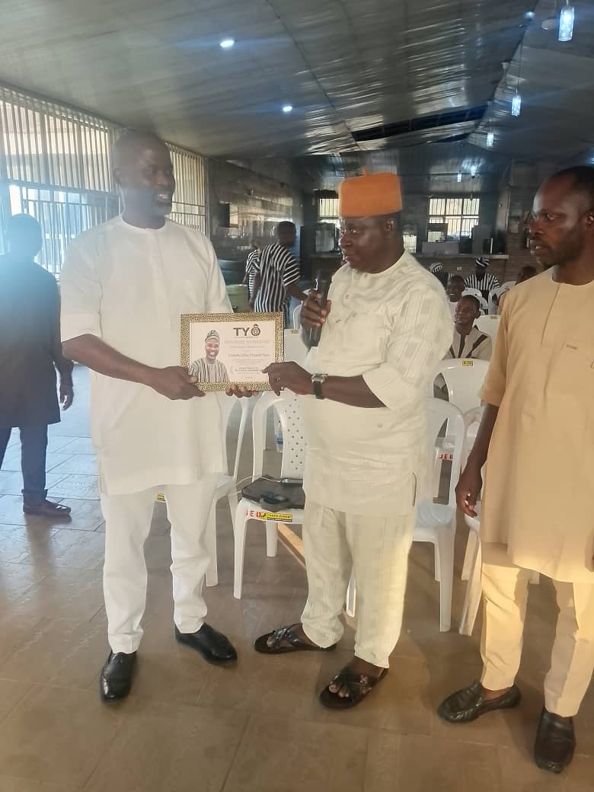

01
Community Engagement
Promote regular ward-level consultations, listening sessions, and open communication with residents, community associations, traditional institutions, and local stakeholders.
Our Commitment to the People
AMAC and Bwari are home to people from different communities, backgrounds, professions, and generations. Our shared future depends on inclusion, opportunity, accountability, and development that reaches every ward.
Comrade Collins Chimaobi Opara's community vision is built around listening to residents, supporting local opportunities, strengthening representation, and promoting practical solutions to the challenges facing our constituency.

A Clear Set of Priorities
Six priority areas for a more inclusive, responsive, and prosperous AMAC/Bwari Federal Constituency.
Promote regular ward-level consultations, listening sessions, and open communication with residents, community associations, traditional institutions, and local stakeholders.
Advocate policies and programmes that support small businesses, local traders, artisans, entrepreneurs, and other contributors to the constituency's economy.
Champion access to vocational training, digital skills, entrepreneurship support, career development, and opportunities that help young people build sustainable livelihoods.
Advocate improved roads, reliable water access, sanitation, healthcare facilities, education, and other essential public services across the constituency.
Promote fairness, equal participation, and a stronger voice for non-indigenes and other underrepresented groups in the development and governance of AMAC and Bwari.
Encourage transparent communication about constituency priorities, legislative activities, public projects, and progress made on commitments to the people.
From Commitment to Action
Meaningful representation requires more than promises. It starts with understanding the everyday concerns of residents, carrying their priorities into public discussions, and communicating progress openly.
Encourage accessible channels for residents, community groups and local stakeholders to express their concerns and priorities.
Promote fair consideration of community needs in constituency engagement, advocacy and legislative representation.
Support clear public communication about priorities, activities, challenges and progress on commitments.

Inclusion in Practice
A constituency as diverse as AMAC and Bwari needs leadership that values dialogue, mutual respect, and cooperation across different communities.
Engagement with groups such as Tiv youth reflects the importance of listening to different voices and building relationships across cultural and community lines.
Our Shared Identity
Our diversity should be a source of strength, not division.
Whether indigenes or non-indigenes, young or old, traders, professionals, workers, or entrepreneurs, everyone has a role to play in building a better AMAC and Bwari.
The goal is a constituency where residents are heard, opportunities are accessible, public resources are responsibly managed, and representation reflects the interests of the people.
Advocacy Beyond the Constituency
The dignity, safety, and rights of Nigerians deserve to be respected wherever they live, work, or travel. Speaking against xenophobia is part of the wider responsibility to promote peaceful coexistence and respect for human dignity.
This advocacy video documents Comrade Collins Chimaobi Opara's position on xenophobia and the treatment of Nigerians in South Africa.
Your Voice Matters
Residents understand their communities best. Your experiences and ideas can help identify the issues that deserve attention.
Tell us about the challenges affecting your street, ward or community.
Share solutions and priorities that could improve everyday life for residents.
Participate in constructive discussions about inclusion, opportunity and development.
Be Part of the Conversation
Your voice, ideas, and community experiences matter. Join the conversation and help shape the priorities that matter to residents across AMAC and Bwari.